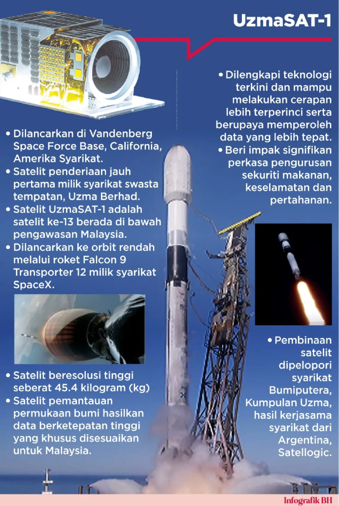

- Press Release, UzmaSAT-1
Satelit penderiaan jauh Malaysia, UzmaSAT-1 dilancar
- January 16, 2025
- By Media GeoAI
PUTRAJAYA: Satelit penderiaan jauh UzmaSAT-1, keluaran syarikat tempatan Uzma Berhad dilancarkan ke orbit rendah bumi awal pagi tadi menerusi roket Falcon 9 Transporter 12 milik syarikat SpaceX.
Pelancaran jam 3 pagi tadi waktu Malaysia di Vandenberg Space Force Base, California, Amerika Syarikat menjadikan UzmaSAT-1 roket ke-13 yang berada di bawah pengawasan Malaysia.
Kementerian Sains, Teknologi Dan Inovasi (MOSTI) dalam kenyataan pagi ini berkata selaku peneraju Dasar Angkasa Negara 2030 (DAN2030), kementerian melalui Agensi Angkasa Malaysia (MYSA) sentiasa komited dalam menyokong usaha pemain-pemain industri tempatan dalam meneroka aktiviti pembangunan sektor angkasa negara yang berdaya saing dan mampan.
Kejayaan pelancaran satelit keluaran UZMA Berhad ini adalah satu lagi petunjuk kepada kejayaan pelaksanaan DAN2030 yang dilancarkan pada tahun 2023.

UzmaSAT-1, sebuah satelit beresolusi tinggi seberat 45.4 kilogram dijangka mampu menyediakan data dan maklumat permukaan bumi negara bagi meningkatkan operasi pemantauan seterusnya memberi impak signifikan dalam memperkasa pengurusan sekuriti makanan, keselamatan dan pertahanan negara.
Menurut MOSTI, penggunaan infrastruktur negara sedia-ada melalui kerjasama strategik dalam aspek pengoperasian satelit berkenaan dijangka dapat mengoptimumkan lagi pengurusan imej-imej berkaitan Malaysia serta mampu meningkatkan kepelbagaian penggunaannya.
Seiring dengan pelaksanaan Pelan Tindakan DAN2030 yang dikenali sebagai Malaysia Space Exploration 2030 (MSE2030), kejayaan pelancaran satelit ini akan memperkukuhkan potensi keupayaan dan kepakaran tempatan dalam teknologi angkasa selain mendorong pemain industri tempatan untuk meneroka potensi baharu agar Malaysia boleh beralih daripada negara pengguna teknologi angkasa kepada negara pencipta teknologi angkasa.
Justeru, berdasarkan dasar, pelan tindakan dan perundangan berkaitan aktiviti angkasa yang telah disediakan oleh kerajaan, seharusnya kejayaan pelancaran satelit UzmaSAT-1 ini menjadi pemangkin kepada usaha pembangunan ekosistem angkasa negara yang lebih maju demi manfaat kesejahteraan rakyat serta kemajuan negara.
Liftoff! pic.twitter.com/leeksuQSjD
— SpaceX (@SpaceX) January 14, 2025
Pelancaran satelit UzmaSAT-1 yang disiarkan secara langsung dari Vandenberg Space Force Base, California, Amerika Syarikat ini turut dipancarkan di Ibu Pejabat Kumpulan Uzma, Kuala Lumpur dan Ibu Pejabat Agensi Angkasa Malaysia (MYSA).
Sumber: BH Online, 15 Januari 2025 @ 7:25am
oleh Wartawan Mahani Ishak
Related Posts
Looking for Answers to Your Industry Issues?
If you want us to share more about space technology, EUDR, EO satellite applications, and industry related, feel free to drop your contact and experience the technology yourself.